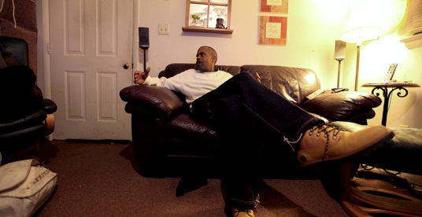
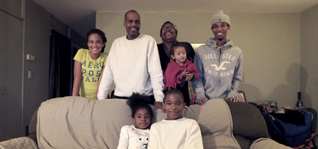
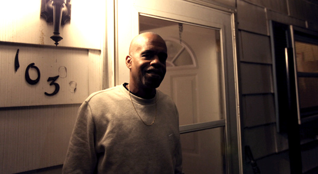

Clevester Logan est un enfant de Charlottesville, une jolie ville étudiante qui abrite la grande université de Virginie, UVA. "Je suis né et j'ai passé presque toute ma vie ici", lance-t-il fièrement. "Autrefois le coin était clairement républicain mais, depuis 2008, on voit beaucoup de panneaux et d'autocollants pour Obama."

Un engouement pour le Parti démocrate dont se félicite cet animateur radio, lui qui continue de soutenir le président sortant et sa politique. "Cela n'a pas été facile ces quatre dernières années, mais il a fait des choses bien alors que les républicains ont tout fait pour faire obstruction à ses réformes."

Pour lui et sa famille nombreuse, il souhaite qu'Obama soit reconduit pour quatre ans afin que celui-ci relance pour de bon l'économie, tout en réduisant la dette "immense" du pays. Surtout, il ne veut pas voir Mitt Romney s'installer à la Maison Blanche."Cet homme n'est qu'un pantin, on ne sait toujours pas ce qu'il pense, il a changé tellement de fois d'avis sur tout un tas de sujets."
 À la rigueur, il préfère l'ancien président George W. Bush à l'actuel candidat républicain. "Lui aussi a dit beaucoup de choses idiotes, mais au moins il les pensait. Ce n'était pas qu'un poseur."